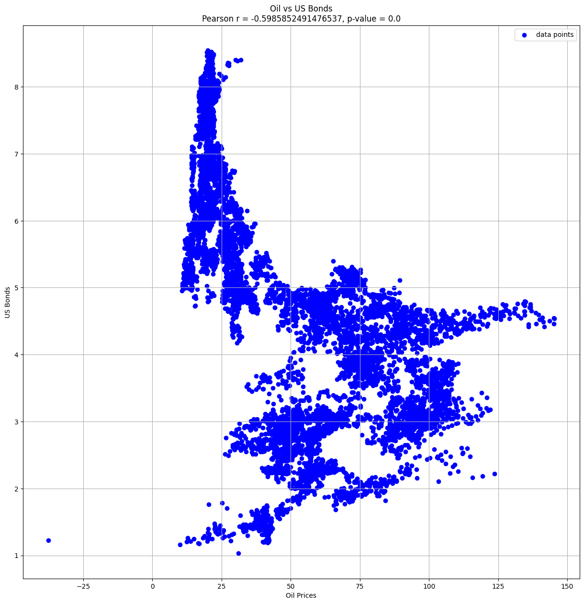
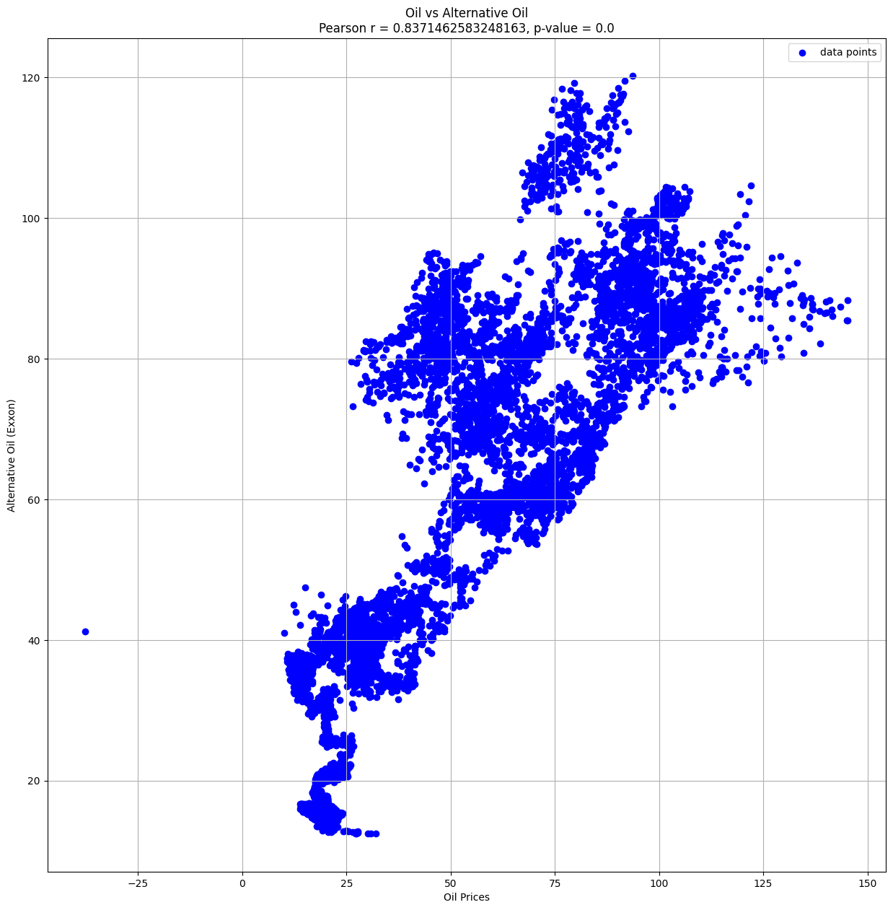
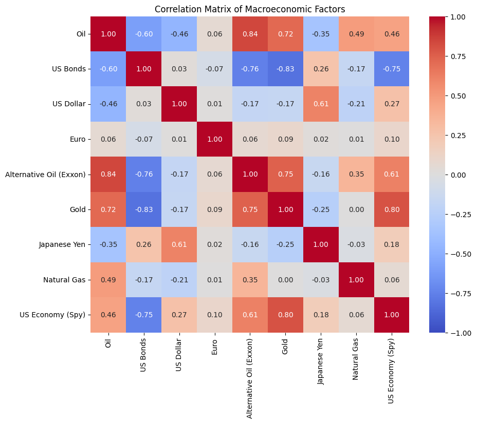
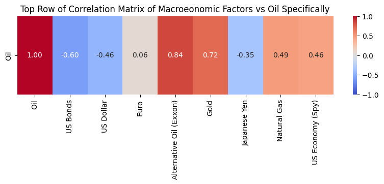
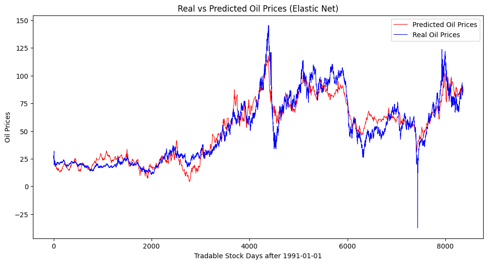

# Data cleaning and interpolation sections can be found below this code box
# 8 macroeconomic factors analyzed (US Bonds, US Dollar, US Economy, Gold, Euro, Japanese Yen, Natural Gas, Shale/Alternative Oil)
oil = pd.read_csv('interpolated_data/oil.csv') # Crude Oil (WTI)
bond = pd.read_csv('interpolated_data/bond_interpolated.csv') # US Bonds
dollar = pd.read_csv('interpolated_data/dollar_interpolated.csv') # US Dollar
euro = pd.read_csv('interpolated_data/euro_interpolated.csv') # Euro
exxon = pd.read_csv('interpolated_data/exxon_interpolated.csv') # Shale/Alternative Oil
gold = pd.read_csv('interpolated_data/gold_interpolated.csv') # Gold
yen = pd.read_csv('interpolated_data/japan_interpolated.csv') # Japanese Yen
ng = pd.read_csv('interpolated_data/ng_interpolated.csv') # Natural Gas
spy = pd.read_csv('interpolated_data/spy_interpolated.csv') # US Economy
# Concatenate DataFrames along the columns
merged_data = pd.concat([oil['Oil'],
bond['US Bonds'],
dollar['US Dollar'],
euro['Euro'],
exxon['Alternative Oil (Exxon)'],
gold['Gold'],
yen['Japanese Yen'],
ng['Natural Gas'],
spy['US Economy (Spy)']], axis=1)
# Pearson correlation test for oil and bonds
corr, p = pearsonr(oil['Oil'], bond['US Bonds'])
print("Pearson correlation coefficient:", corr)
print(f"P-value: {p}")
plt.figure(figsize=(15, 15))
plt.scatter(oil['Oil'], bond['US Bonds'], color='blue', label='data points')
plt.xlabel('Oil Prices')
plt.ylabel('US Bonds')
plt.title(f"Oil vs US Bonds\nPearson r = {corr}, p-value = {p}")
plt.legend()
plt.grid(True)
plt.show()
# CONCLUSION
# Since we have a Person correlation of approximately -0.6 and a p-value of 0, we can conclude that there is a moderate negative correlation between oil prices and US bonds.
# Spearman's correlation test for oul and US dollar
corr, p = spearmanr(oil['Oil'], dollar['US Dollar'])
print("Spearman correlation coefficient:", corr)
print(f"P-value: {p}")
plt.figure(figsize=(15, 15))
plt.scatter(oil['Oil'], dollar['US Dollar'], color='blue', label='data points')
plt.xlabel('Oil Prices')
plt.ylabel('US Dollar')
plt.title(f"Oil vs US Dollar\nSpearman r = {corr}, p-value = {p}")
plt.legend()
plt.grid(True)
plt.show()
# CONCLUSION
# Since we have a Spearman correlation of approximately -0.417 and a p-value of 0, we can conclude that there is a negative correlation between oil prices and US bonds.
# Pearson correlation test for oil and alternative oil
corr, p = pearsonr(oil['Oil'], exxon['Alternative Oil (Exxon)'])
print("Pearson correlation coefficient:", corr)
print(f"P-value: {p}")
plt.figure(figsize=(15, 15))
plt.scatter(oil['Oil'], exxon['Alternative Oil (Exxon)'], color='blue', label='data points')
plt.xlabel('Oil Prices')
plt.ylabel('Alternative Oil (Exxon)')
plt.title(f"Oil vs Alternative Oil\nPearson r = {corr}, p-value = {p}")
plt.legend()
plt.grid(True)
plt.show()
# CONCLUSION
# Since we have a Person correlation of approximately 0.837 and a p-value of 0, we can conclude that there is a significant postive correlation between oil prices and alternative oils such as shale.
# Calculate the correlation matrix
correlation_matrix = merged_data.corr()
# correlation matrix with a heatmap
plt.figure(figsize=(10, 8))
sns.heatmap(correlation_matrix, annot=True, cmap='coolwarm', fmt=".2f", vmin=-1, vmax=1)
plt.title('Correlation Matrix of Macroeconomic Factors')
plt.show()
# top row of the correlation matrix for ease of understanding
plt.figure(figsize=(10, 2))
sns.heatmap(correlation_matrix.iloc[:1, :], annot=True, cmap='coolwarm', fmt=".2f", vmin=-1, vmax=1)
plt.title('Top Row of Correlation Matrix of Macroeonomic Factors vs Oil Specifically')
plt.show()
# Conclusion
# From the top‐row correlations displayed, Oil has its highest positive relationship with Exxon (around +0.84) and a moderately strong positive relationship with Gold (around +0.72). In contrast, US Bonds show a notably strong negative correlation with Oil (around −0.60), and the US Dollar is also negatively correlated (around −0.46). Meanwhile, the Euro exhibits almost no linear relationship with Oil (near zero).
# Elstic Net Regression Model using the eight macroeconomic factors (The model combines both lasso and ridge regression)
# Select the features (X) and target variable (y)
X = merged_data.drop(['Oil'], axis=1) # Assuming 'Date' is not a predictor
y = merged_data['Oil']
# Split the data into training and testing sets
X_train, X_test, y_train, y_test = train_test_split(X, y, test_size=0.2, random_state=42)
# Standardize the features
scaler = StandardScaler()
X_train_scaled = scaler.fit_transform(X_train)
X_test_scaled = scaler.transform(X_test)
# Create and train the Elastic Net model
elastic_net = ElasticNet(alpha=0.1, l1_ratio=0.7) # Adjust alpha and l1_ratio as needed for penalties
elastic_net.fit(X_train_scaled, y_train)
# Make predictions on the test set
y_pred = elastic_net.predict(X_test_scaled)
# Sorting the predicted values since the data is time series based
sorted_indices = X_test.index.argsort()
X_test_sorted = X_test.iloc[sorted_indices]
y_pred_sorted = y_pred[sorted_indices]
# Plotting the predicted oil prices
plt.figure(figsize=(12, 6))
plt.plot(X_test_sorted.index, y_pred_sorted, label='Predicted Oil Prices', linestyle='-', linewidth=.8, color='red')
# Plotting the real oil prices (they were actually negative at some point in April 2020!)
plt.plot(merged_data['Oil'], label='Real Oil Prices', linestyle='-', linewidth=.8, color='blue')
plt.title('Real vs Predicted Oil Prices (Elastic Net)')
plt.xlabel('Tradable Stock Days after 1991-01-01')
plt.ylabel('Oil Prices')
plt.legend()
plt.show()
# Evaluate the model
mse = mean_squared_error(y_test, y_pred)
r2 = r2_score(y_test, y_pred)
print(f'Mean Squared Error: {mse}')
print(f'R-squared: {r2}')
# Define the time series split across 5 intervals
tscv = TimeSeriesSplit(n_splits=5) # Adjust the number of splits as needed
# Initialize metrics for evaluation
all_mse = []
all_r2 = []
# Perform time series cross-validation
for train_index, test_index in tscv.split(X):
X_train, X_test = X.iloc[train_index], X.iloc[test_index]
y_train, y_test = y.iloc[train_index], y.iloc[test_index]
# Standardize the features using the same scaler from the original model
X_train_scaled = scaler.transform(X_train)
X_test_scaled = scaler.transform(X_test)
# Make predictions on the test set
y_pred = elastic_net.predict(X_test_scaled)
# Evaluate the model and store metrics
mse = mean_squared_error(y_test, y_pred)
r2 = r2_score(y_test, y_pred)
all_mse.append(mse)
all_r2.append(r2)
print(f'Time Series Cross-Val Mean Squared Error: {all_mse}')
print(f'Time Series Cross-Val R-squared: {all_r2}')Pearson correlation coefficient: -0.5985852491476537
P-value: 0.0

Spearman correlation coefficient: -0.41738475670874364
P-value: 0.0

Pearson correlation coefficient: 0.8371462583248163
P-value: 0.0




Mean Squared Error: 87.7050713955192
R-squared: 0.9002158537261145
Time Series Cross-Val Mean Squared Error: [34.36423578611308, 81.43223923275082, 132.0438491755038, 156.22180839839578, 98.90077627968168]
Time Series Cross-Val R-squared: [0.04362481848806987, 0.6915861442403776, 0.654891564646737, 0.7151475604322173, 0.756100816830216]